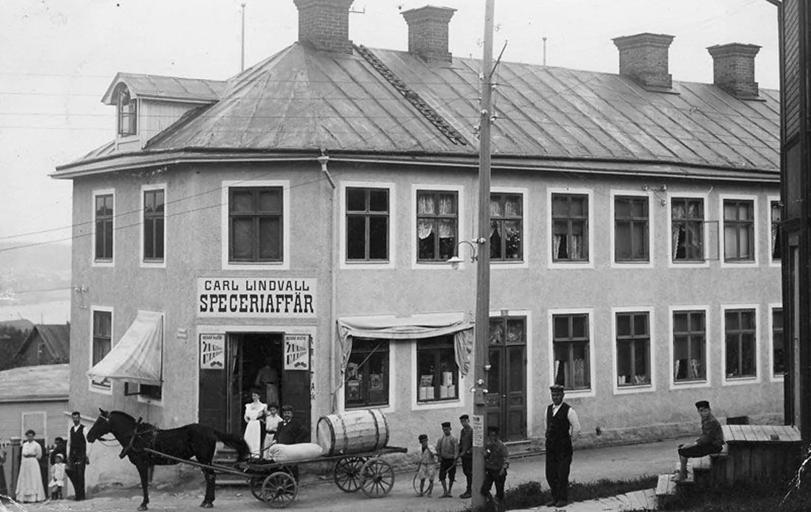
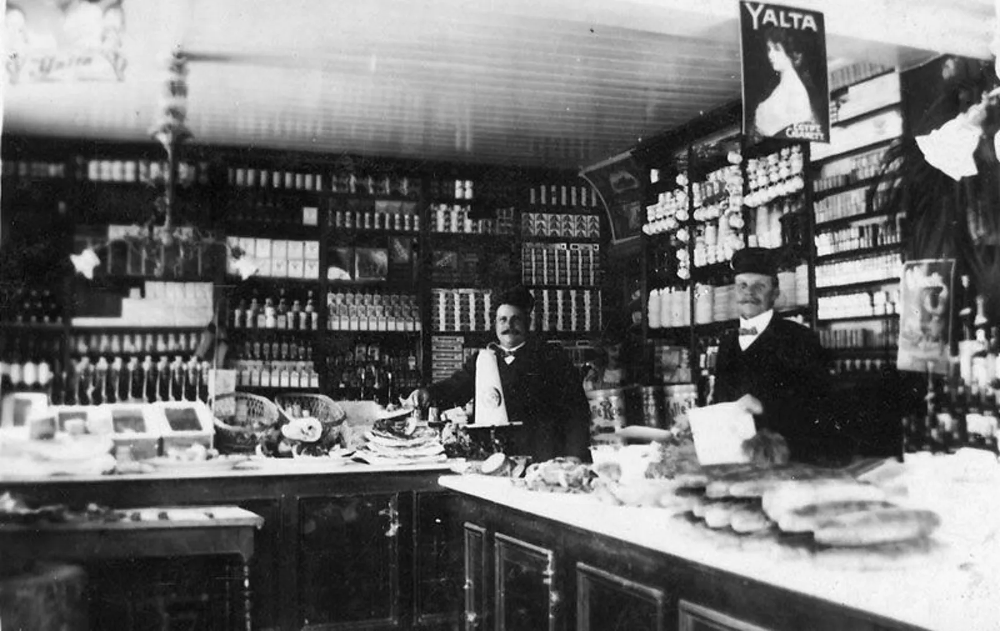

Sälsundet · Alnö · 62°25′ N
Godis från
en ö i Norrland
Kola som inte fastnar i tänderna, brända mandlar och mörk choklad — kokat efter recept som gått i arv sedan Carl & Agnes Lindvalls speceriaffär på Södermalm i Sundsvall.
Ur fabriken
Fyra kvarter av
skärgårdsgodis
Kolastängerna kokas i små satser och skärs för hand. Chokladen är 70 %, mandlarna bränns på ön och presentaskarna packas i kraftpapper med Spikarös gröna rand.
Se hela sortimentetSödermalm, Sundsvall · omkring 1910
Allt börjar i en
speceriaffär
Carl & Agnes Lindvall sålde livsmedel och vin till både vanligt folk och affärsidkare i hela distriktet. En hel del tillverkade de själva — bland annat godis, som såldes över disk i den egna butiken.
Carl och Agnes var morföräldrar till Christer. Så kom recepten till Spikarö. De har bearbetats för att klara dagens krav på livsmedelstillverkning, men grunden är densamma.
- ca 1905
Carl & Agnes Lindvalls Kolonialvaruaffär öppnar på Södermalm i Sundsvall.
- 1930-tal
Butiken stänger. Recepten stannar i familjen.
- 1992
Margareth Georgsson och Christer Olsson startar Spikarö Karamell & Pralin i Spikarna på Alnö.
- Idag
Recept, packning, kvalitetskontroll och produktutveckling sker fortfarande hos oss på ön.


Små satser, hela vägen
Kokat, skuret och
packat för hand
Produktionen började i våra egna lokaler i Spikarna. Med växande försäljning läggs en del av kokningen numera ut på andra bagerier — men recept, packning, kvalitetskontroll och utveckling av nya produkter sker helt och hållet hos oss.
Vi tillverkar löpande och levererar i mindre förpackningar, så att butikerna hela tiden har ett färskt sortiment. Strutarna görs av brunt kraftpapper och har ett pris som gör att ingen butik vill stå och vika egna.
För butiker och gåvoshoppar
Vi är i första hand
tillverkare och grossist
Spikarö finns hos handlare runt Sundsvall och hos utvalda återförsäljare i hela landet. Som återförsäljare handlar du till nettopris, faktura 20 dagar efter sedvanlig kreditprövning.
Villkor
Faktura 20 dagar
Efter kreditprövning. Nya kunder betalar mot förskott. Priser exkl. moms.
Leverans
Packas inom en vecka
Med DHL, oftast snabbare. Kontrollera alltid antalet kolli vid mottagandet.
Förpackning
Säljklara displayer
Kraftpappersaskar med tryckt topskylt — ställs direkt i disk eller hylla.
Sortiment
38 artiklar
Med artikelnummer, vikt, innehåll och näringsvärde för varje vara.
Sälsundet 113, 865 92 Alnö
Hör av dig
Kontoret på Alnö är öppet vardagar 9–17. Där utvecklar vi nya produkter — men vi kan tyvärr inte ta emot besök eller kunder.
Telefon
070-322 96 50Beställning & frågor
maggan@spikaro.seProduktion
christer@spikaro.se